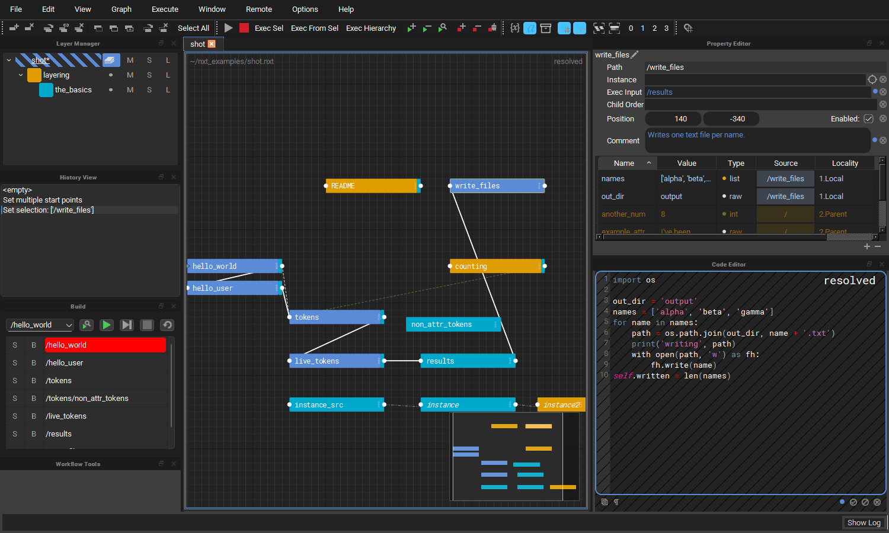
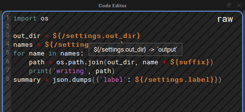
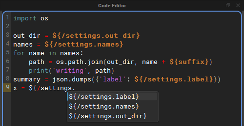

What's New
This page summarises what is new in nxt_editor 4.4 and nxt_core 0.21. Each item links to the part of the docs that explains it in full.
nxt_editor 4.4.2
- Show in Explorer on a layer's right click menu opens the folder it is saved in, with its file selected: Explorer on Windows, the Finder on a Mac, the file manager on Linux.
nxt_editor 4.4.1
- Maya's fonts are left alone again. Opening the editor in Maya no longer changes the font of Maya's own windows, such as the node editor's tab search.
- Code Editor Data State Overlay is now under View > Options, and the editor remembers whether you turned it on or off.

Editor
A code editor that works like a code editor
The code editor picked up the tools you would expect from a text editor. All of them only apply while the code editor has focus, and all of them can be rebound in the Hotkey Editor.
- Find and replace (
Ctrl+F/Ctrl+H) floats over the top right of the code, with a match count, next and previous (F3/Shift+F3) and toggles for match case, whole word and regular expressions. - Go to line (
Ctrl+G) previews the line as you type, andEscputs the cursor back where it was. - Line editing: duplicate (
Ctrl+Shift+D), move (Alt+Up/Alt+Down) and delete (Ctrl+Shift+K) lines, and expand the selection from word to line to everything (Ctrl+D). - Highlighting of every use of the word under the cursor, and of the bracket next to the cursor and its partner.
- Completion (
Ctrl+Space) offers python builtins, names from the modules the compute imports, the node's attributes and${}tokens, and words already in the compute. Each source can be switched on or off under Options > Autocomplete, along with suggestions while you type. - Auto-pairing: typing
(,[,{,"or'adds the closing character, typing a closer that is already there steps over it, and typing an opener with text selected wraps the selection. - Syntax highlighting colours every match on a line. Before, a line with two tokens or two strings only had the first one coloured.
See Code Editor.
Tokens you can hover and follow

In Raw View (Q), hover a ${} token in the code editor to see what it
resolves to, and Ctrl+click a token that reads another node's attribute to
select and frame that node in the graph. See
Following tokens.
Completion that knows what a compute can use

- What the world node imports completes in every node, because every compute can use it.
- The names nxt gives every compute complete without an import:
STAGE,self,w,execute,nxt_path,ExitNode,ExitGraphandtypes. - Inside
${/the node paths in the graph complete, and after a node path's dot its attributes, each as a whole token. - Host Modules, a new source: in Maya,
cmds,om,pmand the other usual short names complete before any import line is written, and so dounrealin Unreal andbpyin Blender. Only modules the host has already loaded are offered, so nothing is imported to complete them. - Python Analysis (jedi), a new optional source: with
pip install nxt-editor[completion], completion after a dot knows what a call returns or a variable holds.
See Completion.
Docks
- Double click a dock's tab, where docks are tabbed together, to float it. Drag a floating dock back in, or double click its title bar to dock it again.
- View > Reset Layout puts every dock back where a fresh install has it.
See Docks and layout.
Editing layer references
Right click a layer in the Layer Manager and choose Edit References... to add, remove, retype and reorder what that layer references, without opening the file in a text editor. Paths can be typed exactly as you want them stored (for example with an environment variable in them), or picked with a file browser. A resolved toggle shows where each reference lands on this machine, and references that cannot be found are kept and marked rather than dropped. See Reference Editor.
Reload Source
Somebody else saved a file your graph is built on? Reload Source... (on a layer's right click menu and in the File menu) re-reads that layer, and as many of the layers it references as you choose, from disk, and composites the graph again. It can be undone. See Reload Source.
Mini map
A mini map in the bottom right of the graph shows the whole graph and where
the view is inside it. Click or drag in it to move the view. Toggle it with
View > Toggle Mini Map or Ctrl+M. See Stage.
Build view
- A find button next to the play button scrolls the build to the node selected in the graph, and tells you when the selected node is not part of the build.
- The build stays current as the graph changes: disabling, deleting, renaming, re-parenting or reconnecting a node updates it straight away.
See Build View.
Smaller changes
- Deleting a node no longer leaves a "ghost" of it in the graph and the build view.
- Pasting several nodes is a single undo.
- Nodes no longer animate open by default, which makes opening a node with many children noticeably faster. The Animate Nodes action turns the animation back on (see Stage).
- A graph is only composited and drawn when its tab is first selected, so opening many files at once is faster.
- Renaming a node no longer rebuilds the whole graph when it does not need to, and a renamed node keeps its position.
- When a build is set up, a cached runtime that no longer matches the graph is rebuilt automatically instead of stopping the build part way through.
- An uncaught error from nxt only opens a dialog when an editor window is visible. In batch or headless sessions it is printed instead, so a host running a graph in the background never stops on a dialog nobody can see.
- The editor no longer needs
pyside6-rcc(or any other compiled step) to build its icons and styles, so the same release works on every platform and host.
Host integrations
- Maya: Maya 2025, 2026 and 2027 are supported. The
nxt_uicommand takes-pathto open graphs,-closeand-reload, and reuses the editor that is already open. Graphs can be run in Maya standalone from the command line withrun_maya_graph.py, including a start node and parameters, and the builtin_maya_standalone_graphnode now passes its_start_nodeon. See Maya. - Unreal: a plugin for Unreal 5.4 to 5.8 that carries its own copy of nxt, nxt_editor and Qt.py, with an nxt menu and a one click Install Qt (PySide6). See Unreal.
- Blender: an add-on for Blender 4.2 and newer with an NXT menu: Open Editor, Close Editor, Run Graph, Run Last Graph, Reload Code and Install Qt. See Blender.
- Hosts that do not ship Qt install PySide6 once into
~/nxt/deps, or into a shared folder named byNXT_QT_DEPS. See Qt for Blender and Unreal.
Python versions
| Package | Python |
|---|---|
| nxt-core | 3.7 to 3.14 |
| nxt-editor | 3.9 to 3.14 (PySide6 6.x, below 6.12) |
PySide6 is held below 6.12 until the editor has been tested on it.
Core (nxt_core 0.21)
- Faster compositing and execution. Large graphs composite and build substantially faster, with identical results.
- One order for finding a reference, everywhere. A reference written
as an absolute path is used as it is. Any other reference is looked for
under the folders in
NXT_FILE_ROOTSfirst, and then relative to the layer that holds it, never relative to wherever the editor was started. A file under a root therefore wins over a file of the same name beside the layer, which is what lets a working copy listed inNXT_FILE_ROOTSstand in for the published one. Adding a reference in the editor now finds the same file that opening the graph does. See How references are found. - References that cannot be resolved are kept. Previously a reference to a file that could not be found was dropped from the layer, and saving the layer wrote it out without the reference. Now it is kept exactly as written, so a graph opened on a machine that cannot see a share no longer loses its references when saved.
- Reloading layers from disk (
Stage.reload_layers), which is what Reload Source is built on. A reference added, removed or reordered in the file since the graph was opened is picked up. - Removing a layer removes everything it brought in, including all of its references, and only the reference that pointed at it.
- Targeted renames: renaming a node that nothing else composites against updates it in place instead of recompositing the stage.
- Graph parameters can enable or disable nodes for a run, for example
{"/node._enabled": false}. See Running a graph in Maya standalone.